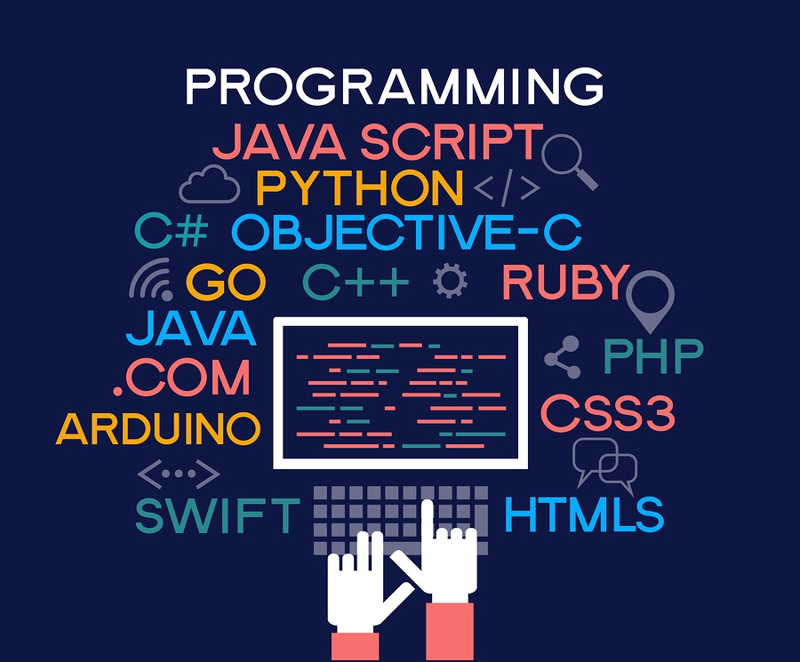

Programming Languages Usability:
Programming languages form the interface between programmers (the users) and the computation that they desire the computer to execute. Although studies exist for some aspects of programming language design (such as conditionals), other aspects have received little or no human factors evaluations. Designers thus have little they can rely on if they want to make new languages highly usable, and users cannot easily chose a language based on usability criteria. This SIG will bring together researchers and practitioners interested in increasing the depth and breadth of studies on the usability of programming languages, and ultimately in improving the usability of future languages.